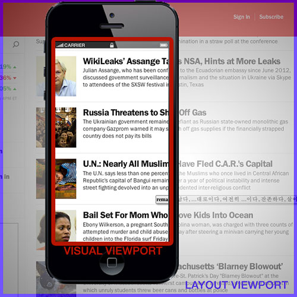

Speaker

- 전성균
- a.k.a Mohwa
- CarbonCode Front-end Engineer
- JavaScript로 돈벌고 싶었던,
10년차 Server-Side .NET 개발자 - twitter : @yanione
- facebook : yanione
INDEX
- Viewport
- 반응형 종류와 구현 방법
- Polyfills
- 디자인 경량화란?
- 경랑화 방법
- Summary
Viewport
A viewport is a polygon viewing region in computer graphics, or a term used for optical components. It has several definitions in different contexts:
컴퓨터나 휴대 단말기 등 장치에 Display 요소가 표현되는 영역을 말한다
왜 잘 모를까?
- 대충 이런게 있구나 하고 말았다
- 또! 대충 넣으라고 해서 넣었더니 알아서 잘된다
- 그 딴거 몰라도 된다!! 프레임웍이 다 알아서 해준다
그럼 왜 알아야 하나?

Visual/Layout
Visual/Layout
좀더 알아보자!!
- 모바일 브라우저 상에서 확대/축소, 가로/세로 모드
전환 시 Visual 영역의 크기는 달라진다. - 하지만 Layout 영역의 크기는 달라지지 않는다.
미적용시 = 깨알 같은 화면;;
적용 방법
Property
- width
- height
- initial-scale
- minimum-scale
- maximum-scale
- user-scalable
Viewport 적용 시
Viewport만 적용했다고 이런 화면이 나오지는 않는다
반응형 Layout의 종류

Liquid Layout
Fluid Grid
비율에 따라 동적으로 흐르는 레이아웃
Adaptive Layout
정해진 넓이에 따라 고정폭으로 변하는 레이아웃
반응형 구현 방법
- JavaScript Event
- CSS Media Query
Media Query
- CSS로 선언
- Link Tag로 선언
CSS3 선언법
@media only screen
@media only screen
and (min-device-width : 320px)
and (max-device-width : 480px){
body{
background-color: green;
}
}
Link Tag 선언법
Polyfills
HTML5 API 등이 오래된 브라우저 에서 작동할 수 있도록 해 주는 JavaScript 라이브러리 등...
- respond.js
- html5shiv.js
- css3-mediaqueries.js
Next Speaker
- 박일호
- a.k.a iMaZiNe
- Front-end Engineer / Design-gineer
- twitter : @imazine80
- facebook : imazine80
디자인 경량화란?
지속적인 사용자 경험을 바탕으로한
친절하고 겸손한 디자인 포인트
Why?
- 평등하지 않은 네트웍
- 작아지는 디바이스
- Low Power
- Web Application 성능
디자인과 성능의 연관성
(Yes / No)
How do you think?
Absolutley YES!!
어찌보면... 디자인은 겸손해야 할지도
우리가 만드는 것
"WEB"
생각해야 하는 것
"BROWSER!"
Browser Render

성능 개선을 위해 잘 알려진 방법
- DOM Depth 를 줄입니다
- DOM 구조를 단순화 합니다
- DOM을 최소화 합니다
- 결국 DOM을 줄입니다
디자인을 경량화 하려면?
사실 저도 잘...
고민의 흔적들을 공유해 봅니다
몇가지 방법
Flat UI

MS Zune 에서 처음 채용된 것으로 알려져 있음
iOS의 Skeuomorphism 시대에
MS의 MetroUI에 의해 뜨거운 감자로...
Google의 사랑을 받고
Jonathan Ive 너마저...
Flat UI 의 장점
- Vector Based
- Minimal DOM
Vector 의 장점 ?

- 선명한 표현이 가능
- 해상도 및 크기의 영향을 받지 않음
- 단순 구조 표현에 적합
- 용량이 작다 !!
- 유연하다 !!
FlatUI 는 적은 용량으로 선명하고 유연한 표현이 가능
Web Font
- Google Fonts
- 누구나 읽을 수 있다
- Vector의 장점을 사용
- 양날의 검
- Web Safe Font
- 한글은 안전폰트를 Kerning
Web safe font
OS / Platform 공용
혹은 가장 비슷하게 보이는
font-family : 'Apple SD Gothic Neo', '맑은 고딕',
'Malgun Gothic', 'Nanum Gothic', '나눔고딕',
'Driod Sans Fallback', 'Driod Sans',
Helvetica, 'Gulim';
Font-icon
- Dingbat Font 라는 기술로 존재했음
-
21th 7. 12 - Say Hello Octicon 발표로 세간의 주목
- Jon Rohan & Cameron McEfee

- Flat UI 제작에 용이
- unicode 의 사용자 정의 영역(0xE000 ~ 0xF8FF)사용 권장
- Vector의 장점을 사용
Free Sites
Hold on!
DEMO will be followed soon after Summary
Summary
디자인 경량화 방법
- Flat UI
- Web Font
- Font-icon
Benefits
- 크기와 전송량이 줄어든다
- 접근성이 높아진다
- Code로 표현이 가능하다
- 유연하다
And...
DOM이 단순해 진다
DEMO
One more thing...
좋은 반응형 웹을 디자인 하려면?
- 사용자 경험의 연결성을 고려하자
- DOM Depth 를 고려하자
Vector 기반으로 사고하자
Device & Browser
구현 가능성을 고려하자

비표준과 파편화가 힘들게 할지라도...
Webkit is just Webkit
다양한 브라우저에 관심을 갖자

오버하지 말자
images/ plug-in/ web fonts

Response
- There are so many ways
- Response your collaborators
- Make Collaboration